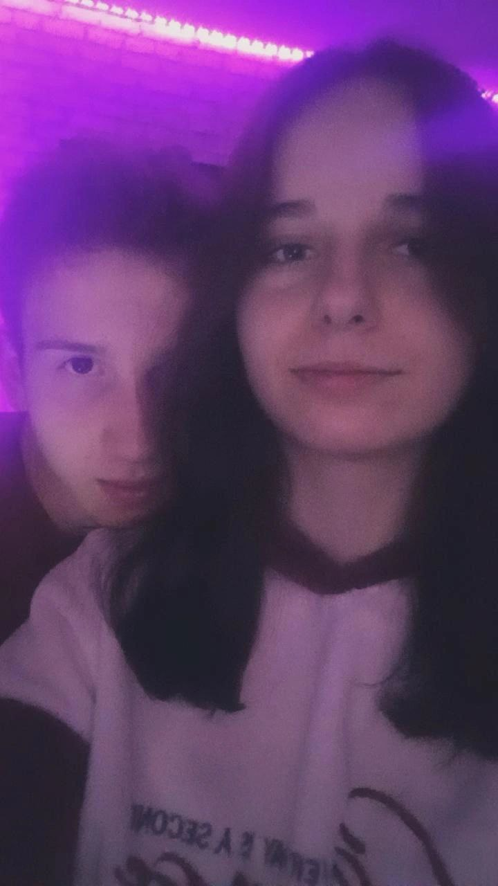
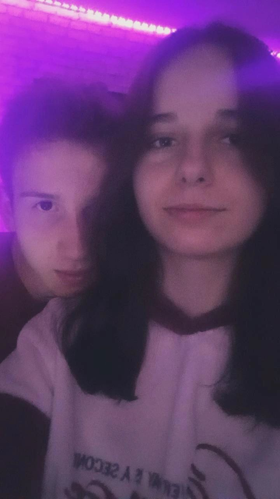

Привіт!
В цей момент ти читаєш це все, написане від мене іскрєннє, чесно, бо ти для мене найважливіша, найкраща, і я дуже хочу бути з тобою назавжди, тому що піздєц як сильно тебе кохаю, з тобою почуваю себе в повному комфорті, спокою, з тобою майже про все негативне забуваю, і завжди хочеться бути тільки з тобою. Я радісний, коли ти радієш, я щаслів, коли ти щаслива, кожна хвилина проведена з тобою, кожен момент, коли ти посміхаєшся, все це безцінно. Це я пишу найгарнішій у світі дівчині, яку я безмірно обожнюю, кохаю, завжди вірю в неї, пишаюся нею, вона така розумничка, талановита, хазяюшка, голос якої я ніколи не забуду, це ти, тебе з посмішкою на обличчі хочу бачити кожного дня, хочу знати що ти кушаєш, чим займаєшся, як твій настрій, про що думаєш. Ще я дуже хочу тобі подякувати за твою турботу (як тоді коли ти в автобус заходила, сказала мені додому бистро йти) і не тільки), за те що ти для мене робиш, откритка, вірш, це все теж безцінно, дякую за твою прояву любові, і твої укуси, як же я їх обожнюю (без сарказму), взагалі я тебе всю обожнюю, кохана ❤️❤️ Буду старатись заради тебе, заради наших стосунків і твого щастя, завжди буду піклуватись про тебе, і, признатись, я завжди переживаю за тебе, хочу щоб з тобою все було добре і ти ні за що не беспокоілась, віддав би все заради того щоб нічого тебе не турбувало. З тобою в мене підіймається настрій, в душі царить мир, так приємно коли ти поруч, і проводити з тобою свій час дуже ахуєнно, як танцювали тоді це було так прекрасно. Ріднесенька моя, кохаю, люблю і обожнюю тебе безмірно, ти моє щастячко ❤️❤️🔥😘
Ось я крч зробив едіт з бехой: тик
А ось ми)
.png) 
